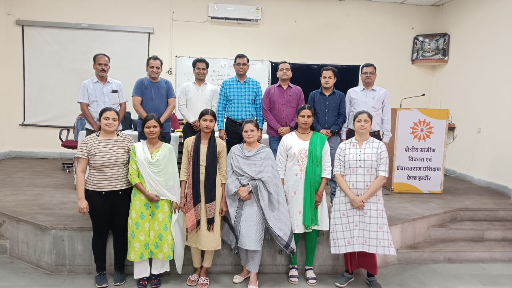
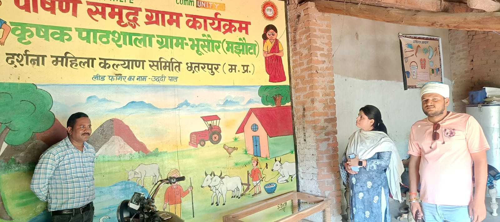
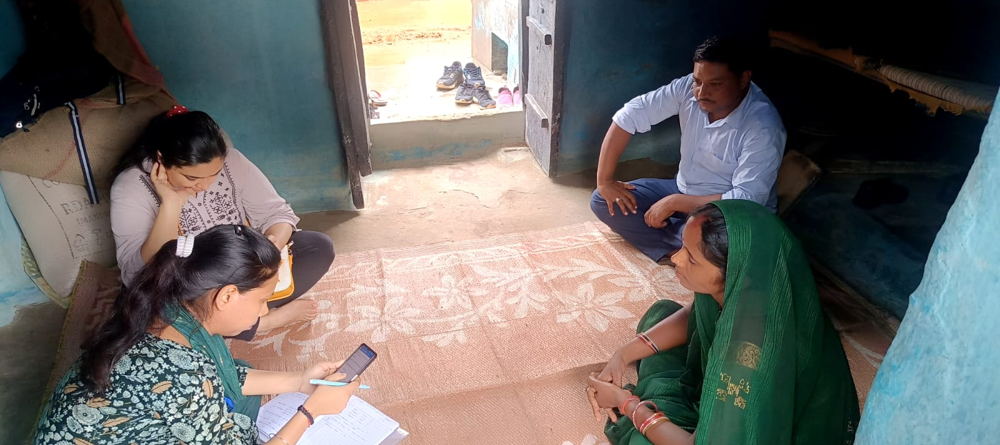
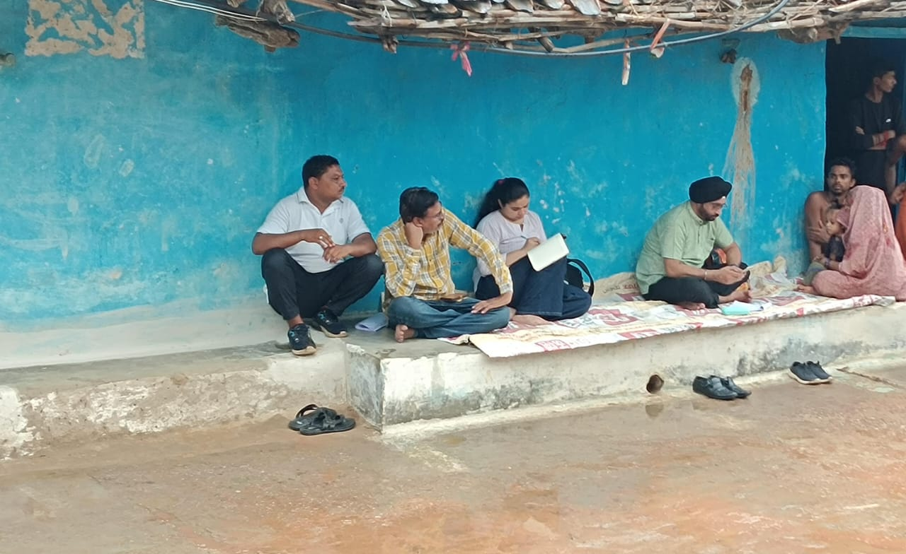
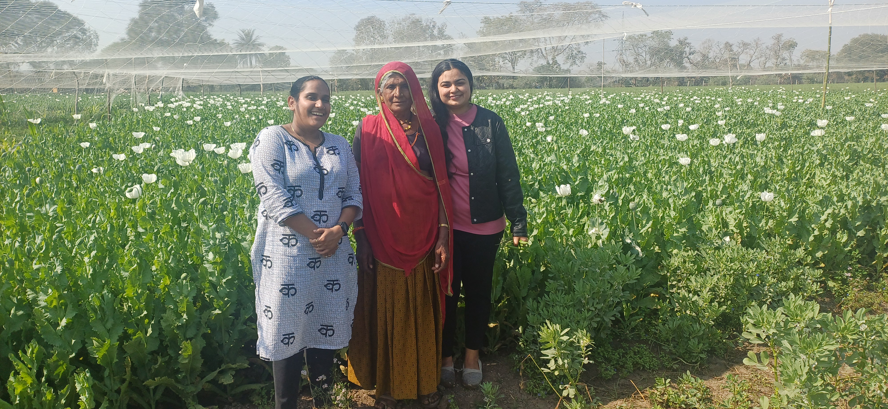
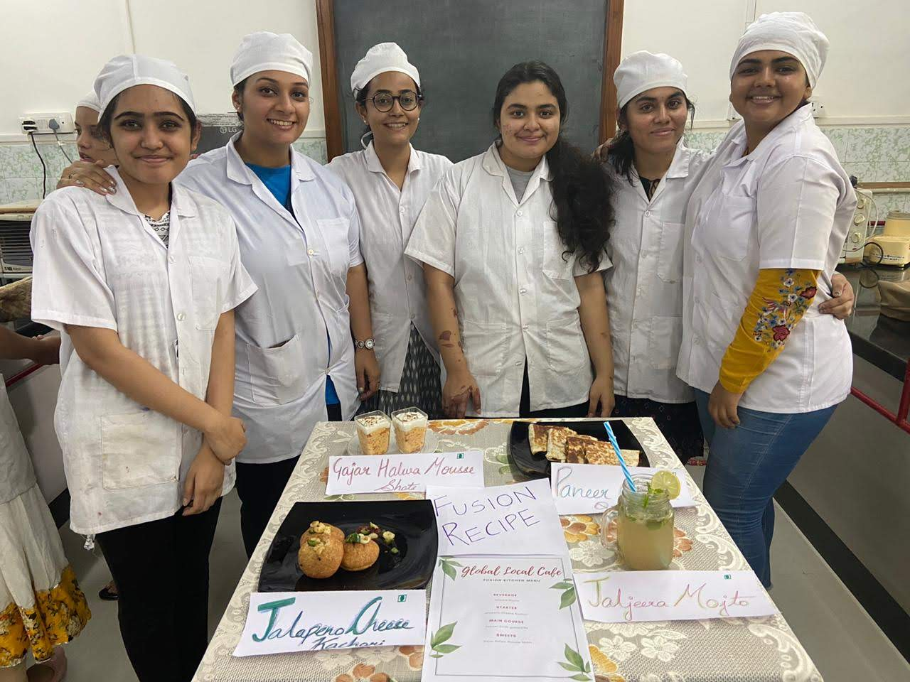
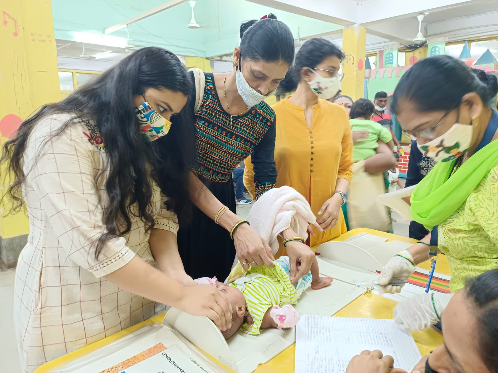
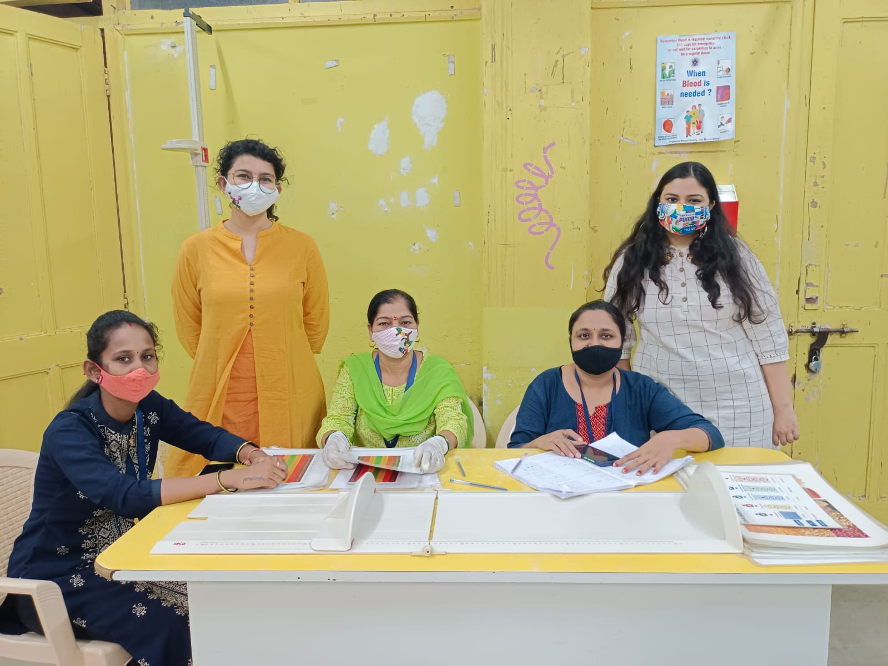

From nutrition science to evidence-to-policy
Each role added a new set of tools. The question stayed the same throughout.
Producing policy data stories and financial models on agricultural value chains in Raichur, Karnataka — finding farmers capture as little as 22% of final product value and modelling what it would take to change that.
Built QGIS spatial maps of crop water productivity for approximately 1,000 farmers feeding into WELL Labs' CLARITY rural transformation program. Researching lead and heavy metal contamination in rural drinking water. Presented research at the 39th Annual Conference on Agricultural Marketing, University of Hyderabad (NABARD & ICSSR).


Government stakeholder workshop · Nutrition Smart Village program, field visit
Led evaluations across health, nutrition, climate resilience, and livelihoods — from study design through analysis and reporting. Designed the Resilience Measurement Index, now used by 4+ organisations to prioritise resources for 2,000+ households.
Key work: WHH Nutrition Smart Villages evaluation across Bangladesh, Nepal, and India (260+ villages); epidemiological modelling for a UNAIDS policy white paper; securing ~₹1.5–2 Cr in program funding from UNICEF, UNDP, Tech Mahindra, ITC, and others; building partnerships with 300+ NGOs through the Community Action Collaborative.



Household surveys · FGDs with community members · Field visit, farming communities
Analysed 10 high-growth market segments across food, agriculture, and nutrition (combined revenue over $60B) through 60+ primary industry interviews. Published 12 research reports. Grounding in the economics of food systems that connected, years later, to value chain work in Karnataka.
Where the question first formed. Designing and delivering MCH training across 40 villages — achieving 85% improvement in learning outcomes across 4 clusters, reaching 500+ SHG women and 700+ adolescent girls. Pre- and post-training data analysis across 700 beneficiaries identified which of 25 determinants needed the most attention.
The experience of turning field data into program decisions in real time — with communities who had little tolerance for abstraction — shaped how I think about evidence ever since.


Capacity building sessions · Health assessments · Community learning, Rajasthan 2022
B.Sc. in Food, Nutrition & Dietetics (Hons), SNDT Women's University, Mumbai (GPA 8.05, Top 5%). M.Sc. in Public Health Nutrition, Symbiosis Institute of Health Sciences, Pune (GPA 8.85, Top 5 in class). Thesis on social media and dietary behaviour (10/10) — later published in Nutrients (2025). Impact Fellow, Global Governance Initiative (2022). PG Certificate in Data Sciences for Social Impact, Ashoka University — 100% scholarship, J-PAL South Asia IDCA.



Nutrition science lab · Thesis fieldwork, infant anthropometry · Field data collection